Exercises
Guides to eight common exercises, with the cues Move Smart looks for and the mistakes it flags most often.
Compare exercises
Use this table to see what each exercise works and the one mistake to watch for. Each exercise has a full guide below.
Eight common exercises at a glance
| Exercise |
Main muscles worked |
Most common mistake |
How to fix it |
Difficulty |
| Squat |
Quads, glutes, hamstrings |
Knees caving inward |
Push your knees out in line with your toes |
Beginner |
| Push-up |
Chest, shoulders, triceps |
Hips sagging toward the floor |
Squeeze your glutes and brace your core to keep a straight line |
Beginner |
| Lunge |
Quads, glutes |
Front knee drifting inward |
Keep your front knee over the middle of your foot |
Beginner |
| Deadlift |
Hamstrings, glutes, lower back |
Rounding the lower back |
Keep a neutral spine and the bar close to your legs |
Intermediate |
| Overhead press |
Shoulders, triceps, upper back |
Arching the lower back |
Tighten your glutes and core and press straight up |
Intermediate |
| Bicep curl |
Biceps, forearms |
Swinging the elbows forward |
Keep your elbows at your sides and lift slowly |
Beginner |
| Jumping jack |
Full body, heart and lungs |
Arms stopping below the head |
Reach all the way overhead and jump your feet wide |
Beginner |
| Plank |
Core, shoulders, glutes |
Hips sagging or piking up |
Squeeze your glutes and keep a straight line from head to heels |
Beginner |
Spot the difference
Drag the slider to compare a common mistake with good form. These are the same mistakes Move Smart flags during a live check.
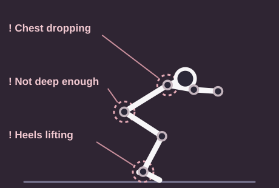
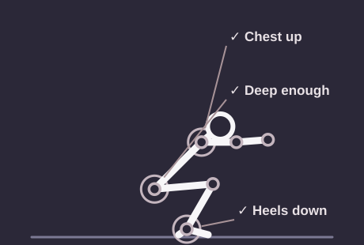
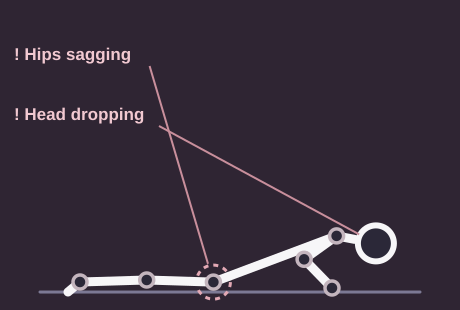
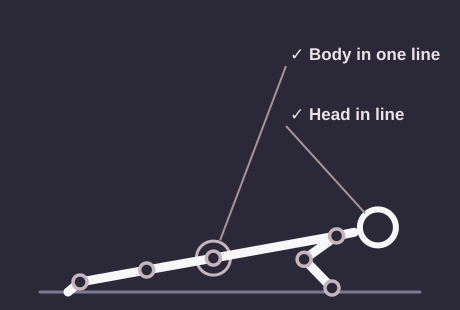
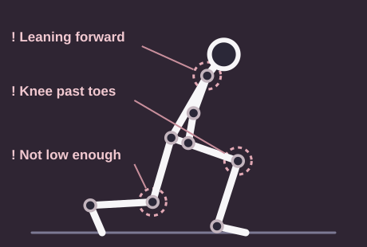
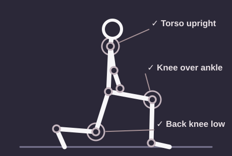
Common mistake
Good form
‹ ›
What to fix
- Heels lifting: keep your whole foot on the floor and sit back into your heels.
- Chest dropping: keep your chest up and your eyes forward.
- Not deep enough: lower until your hips are level with your knees.
- Hips sagging: squeeze your glutes and brace your core so your body stays straight.
- Head dropping: look at the floor just ahead of your hands to keep your neck in line.
- Leaning forward: keep your torso tall, with your shoulders over your hips.
- Knee past toes: take a longer step so your front knee stays over your ankle.
- Not low enough: lower until your back knee is close to the floor.
Check your squat live
Exercise guides
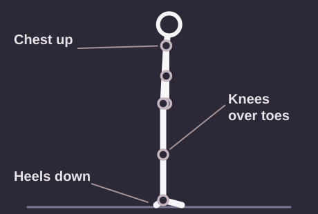
Squat
Squats strengthen your quads, glutes, and hamstrings, and they make everyday movements like sitting down and standing up easier.
Form cues
- Stand with your feet about shoulder-width apart and your toes turned out slightly.
- Push your hips back and bend your knees at the same time.
- Keep your chest up and your heels on the floor.
- Go down until your thighs are about parallel to the floor, or as low as you can with a flat back.
Most common mistake: Knees caving inward. Push your knees out so they stay in line with your toes.
Try squats live
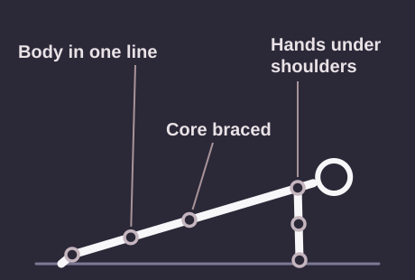
Push-up
Push-ups build your chest, shoulders, and triceps while training your core to hold a straight line.
Form cues
- Place your hands slightly wider than your shoulders.
- Brace your core and squeeze your glutes so your body forms one line.
- Lower until your chest is a few inches from the floor.
- Keep your elbows at about a 45-degree angle from your body.
Most common mistake: Hips sagging toward the floor. Tighten your core and glutes, or start with your hands on a bench.
Try push-ups live
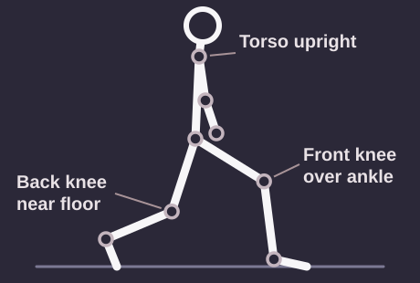
Lunge
Lunges work one leg at a time, which builds balance and evens out strength between your legs.
Form cues
- Take a long step forward and keep your torso upright.
- Lower your back knee toward the floor.
- Keep your front knee over the middle of your foot.
- Push through your front heel to stand back up.
Most common mistake: Front knee drifting inward. Slow down and keep your knee lined up with your second toe.
Try lunges live
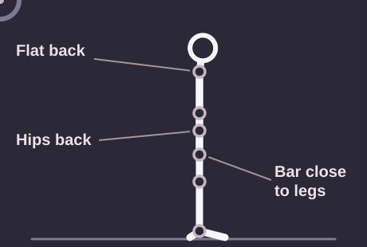
Deadlift
Deadlifts train your hamstrings, glutes, and back to lift safely from the floor.
Form cues
- Stand with the bar over the middle of your feet.
- Hinge at your hips and grip the bar just outside your legs.
- Keep your back flat and your chest up.
- Push the floor away and keep the bar close to your legs as you stand.
Most common mistake: Rounding the lower back. Lighten the weight and practice the hip hinge until your back stays flat.
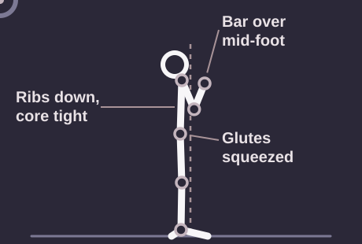
Overhead press
The overhead press builds strong shoulders and triceps and teaches your whole body to stay tight.
Form cues
- Start with the bar at your collarbone and your hands just outside your shoulders.
- Squeeze your glutes and brace your core.
- Press straight up and move your head back slightly to let the bar pass.
- Finish with the bar over the middle of your feet.
Most common mistake: Arching the lower back. Keep your ribs down and your glutes tight, and use a lighter weight.
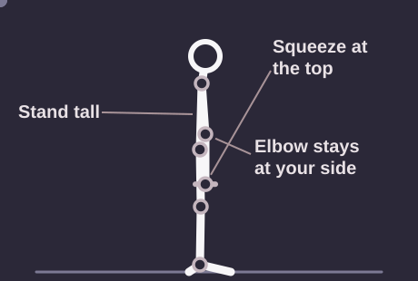
Bicep curl
Bicep curls build the muscles on the front of your upper arm, which help with everyday lifting and carrying.
Form cues
- Stand tall with a dumbbell in each hand, palms facing forward.
- Keep your elbows close to your sides.
- Curl the weights up until your forearms are close to your upper arms.
- Lower slowly until your arms are straight again.
Most common mistake: Swinging the elbows forward. Keep your elbows pinned to your sides, and use a lighter weight if you have to swing.
Try bicep curls live
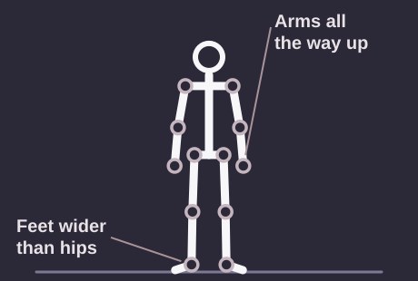
Jumping jack
Jumping jacks raise your heart rate and warm up your whole body before a workout.
Form cues
- Start with your feet together and your arms by your sides.
- Jump your feet out wider than your hips as you raise your arms overhead.
- Jump back to the start position with control.
- Land softly on the balls of your feet.
Most common mistake: Arms stopping below your head. Reach all the way up until your hands nearly meet overhead.
Try jumping jacks live
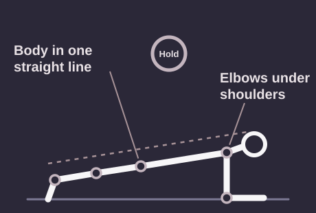
Plank
The plank strengthens your core, which supports your back during almost every other exercise.
Form cues
- Place your elbows directly under your shoulders with your forearms on the floor.
- Step your feet back and lift your body into one straight line.
- Squeeze your glutes and brace your core.
- Keep breathing and hold for as long as your form stays solid.
Most common mistake: Hips sagging or piking up. Squeeze your glutes and keep a straight line from your head to your heels.
Try a plank live
Looking for more exercises? Browse the ACE Exercise Library.